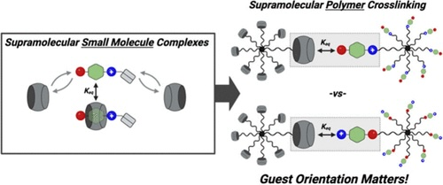
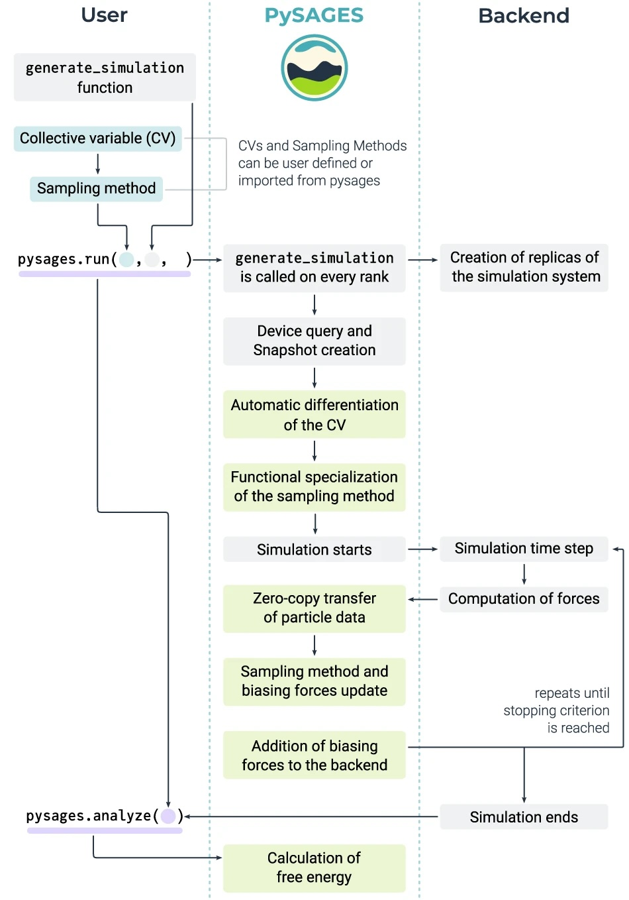
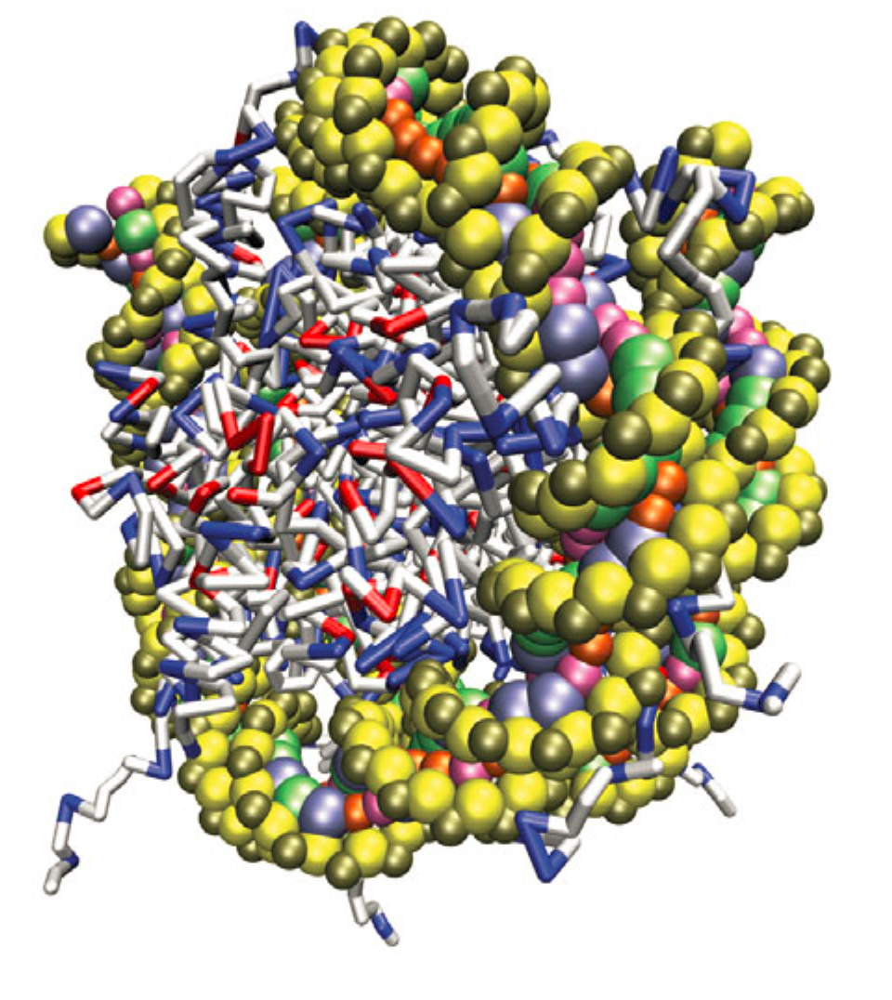
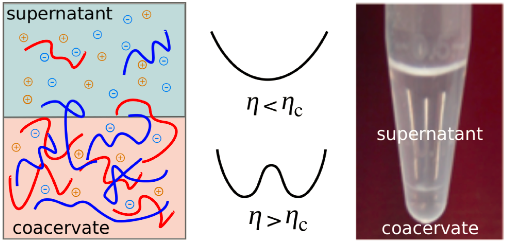

Publications (Google Scholar Link)
Papers listed below are broken into two sections: Notre Dame (articles submitted after joining the faculty at Notre Dame) and Pre-Notre Dame (articles submitted during undergraduate, graduate, and postdoctoral work).
Notre Dame
[58] Jiacheng Liu, Marvin Diaz-Segura, A Scott Manning, Lingyu Yang, Govinda Devkota, Sunil P. Upadhyay, Jonathan K. Whitmer and Jennifer L. Schaefer.
"Amphiphilic salts as single-component, solvent-free, lithium electrolytes."
Electrochimica Acta, 511, 145415, 2025.
[57] Christopher J. Addonizio, Adam S. Braegelman, Connor R. Schmidt, Rachel C. Ollier, Akwasi Ansah Antwi, Bo Su, Mohsen Farshad, Jonathan K. Whitmer and Matthew J. Webber.
"Impact of Guest Orientation in Host-Guest Supramolecular Hydrogels."
ACS Macro Letters, 14, 1, 8-13, 2022.

[56] Logan Hennes, Chloe Behringer, Mohsen Farshad, Jennifer L. Schaefer and Jonathan K. Whitmer.
"Controlling Electrostatics to Enhance Conductivity in Structured Electrolytes."
Submitted, 2024.

[55] Andrew V. Marquardt, Mohsen Farshad and Jonathan K. Whitmer.
"Calculating Binding Free Energies in Model Host-Guest Systems with Unrestrained Advanced Sampling."
Journal of Chemical Theory and Computation, 20, 9, 3927-3934, 2024.
[54] Orlando A. Mendible, Jonathan K. Whitmer and Yamil J. Colón.
"Considerations in the use of ML interaction potentials for free energy calculations."
Submitted, 2024.
[53] Pablo F. Zubieta Rico, Ludwig Schneider, Gustavo R. Pérez-Lemus, Riccardo Alessandri, Siva Dasetty, Trung D. Nguyen, Cintia A. Menéndez, Yiheng Wu, Yezhi Jin, Yinan Xu, Samuel Varner, John A. Parker, Andrew L. Ferguson, Jonathan K. Whitmer and Juan J. de Pablo.
"PySAGES: flexible, advanced sampling methods accelerated with GPUs."
npj Computational Materials, 10, 35, 2024.

[52] Ramón González-Pérez, Stephen Adams, Alexander W. Dowling, William A. Phillip and Jonathan K. Whitmer.
"Thermodynamics of Li+-Crown Ether Interactions in Aqueous Solvent."
Journal of Physical Chemistry A, 127, 21, 4624-4631, 2023.
[51] Jiale Shi, Fahed Albreiki, Yamil J Colón, Samanvaya Srivastava and Jonathan K Whitmer.
"Transfer Learning Facilitates the Prediction of Polymer-Surface Adhesion Strength."
Journal of Chemical Theory and Computation, 19, 14, 4631-4640, 2023.
[50] Yulu Huang, Weiqiang Wang, Jonathan K Whitmer and Rui Zhang.
"Structures, thermodynamics and dynamics of topological defects in Gay-Berne nematic liquid crystals."
Soft Matter, 19, 483-496, 2022.
[49] Jiale Shi, Michael J Quevillon, Pedro H Amorim Valença and Jonathan K Whitmer.
"Predicting Adhesive Free Energies of Polymer–Surface Interactions with Machine Learning."
ACS Applied Materials & Interfaces, 14, 32, 2022.
[48] Jiale Shi, Shanghui Huang, François Gygi and Jonathan K Whitmer.
"Free-Energy Landscape and Isomerization Rates of Au4 Clusters at Finite Temperatures."
Journal of Physical Chemistry A, 126, 21, 3392-3400, 2022.
[47] Ernesto C Cortés-Morales, Vikramjit S Rathee, Ahmad Ghobadi and Jonathan K Whitmer.
"A molecular view of plasticization of polyvinyl alcohol."
Journal of Chemical Physics, 155, 174903, 2021.
[46] Shanghui Huang, Michael J. Quevillon, Ernesto C. Cortés-Morales and Jonathan K. Whitmer.
"Exploring the Potential of Parallel Biasing in Flat Histogram Methods."
Submitted, 2021.
[45] Mariana E. Farías-Anguiano, Ernesto C. Cortés-Morales, Jonathan K. Whitmer and Pedro E. Ramírez-González
"Linking dynamics and structure in highly asymmetric ionic liquids."
Submitted, 2021.
[44] Marco Govoni, Jonathan K. Whitmer, Juan de Pablo, Francois Gygi and Giulia Galli.
"Code interoperability extends the scope of quantum simulations."
npj Computational Materials, 7, 32, 2021.
[43] Shanghui Huang, Michael J. Quevillon, Soren Kyhl and Jonathan K. Whitmer.
"Surveying the free energy landscape of clusters of attractive colloidal spheres."
Journal of Chemical Physics, 152, 134901, 2020.
[42] Anne C. Leonhard and Jonathan K. Whitmer.
"Accurate Determination of Cavitand Binding Free Energies via Unrestrained Advanced Sampling"
Journal of Chemical Theory and Computation, 15, 11, 5761-5768, 2019.
[41] Jiale Shi, Hythem Sidky and Jonathan K. Whitmer.
"Novel elastic response in twist-bend nematic models."
Soft Mattter, 15, 8219-8226, 2019.

[40] Michael Quevillon and Jonathan K. Whitmer.
"Replica Exchange Simualtions of the Crystal--Smectic-A Transition in Ionic Liquid Crystals",
Submitted, 2019.

[39] Hythem Sidky, Jiale Shi and Jonathan K. Whitmer.
"Automated determination of n-cyanobiphenyl and n-cyanobiphenyl binary mixtures elastic constants in the nematic phase from molecular simulation."
Molecular Systems Design & Engineering, 5, 1131-1136, 2020.
[38] Vikramjit S. Rathee, Benjamin J. Sikora, Hythem Sidky and Jonathan K. Whitmer.
"Explicit Ion Effects on the Charge and Conformation of Weak Polyelectrolytes."
Polymers, 11, 183, 2019.
[37] Ming Han, Jonathan K. Whitmer and Erik Luijten.
"Dynamics and Structure of Colloidal Aggregates Under Microchannel Flow."
Soft Matter, 15, 744-751 2019.
[36] Mark J. Summe, Sushree Jagriti Sahoo, Jonathan K. Whitmer and William A. Phillip.
"Salt Permeation mechanisms in ink-jet printed charge mosaic membranes."
Molecular Systems Design & Engineering 3, 959-969, 2018.
[35] Vikramjit S. Rathee, Hythem Sidky, Benjamin J. Sikora and Jonathan K. Whitmer.
"Role of associative charging in the entropy-energy balance of polyelectrolyte complexes."
Journal of the American Chemical Society, 140, 15319-15328, 2018.
[34] Emre Sevgen, Federico Giberti, Hythem Sidky, Jonathan K. Whitmer, Giulia Galli, Francois Gygi and Juan J. de Pablo.
"Hierarchical Coupling of First-Principles Molecular Dynamics with Advanced Sampling Methods",
The Journal of Chemical Theory and Computation, Accepted (2018).
[33] Ashley Guo, Emre Sevgen, Hythem Sidky, Jonathan K. Whitmer and Juan J. de Pablo.
" Adaptive enhanced sampling by force-biasing using neural networks",
The Journal of Chemical Physics, 148, 134108 (2018).
[32] Vikramjit S. Rathee, Aristotle J. Zervoudakis and Jonathan K. Whitmer. "Weak Polyelectrolyte Complexation Driven by Associative Charging",
The Journal of Chemical Physics, 148, 114901 (2018).
[31] Hythem Sidky, Juan J. de Pablo and Jonathan K. Whitmer
"In Silico Measurement of Elastic Moduli of Nematic Liquid Crystals",
Physical Review Letters, 120, 107801 (2018).

[30] Hythem Sidky and Jonathan K. Whitmer. "Learning Free Energy Landscapes Using Artificial Neural Networks."
The Journal of Chemical Physics, 148, 104111 (2018).
[29] Hythem Sidky, Yamil J. Colon, Benjamin J. Sikora, Cody Bezik, Federico Giberti, Weiwei Chu, Federico
Giberti, Ashley Z. Guo, Joshua Lequieu, Jiyuan Li, Joshua Moller, Michael Quevillon, Mohammad Rahimi,
Hadi Ramezani-Dakhel, Vikramjit S. Rathee, Daniel R. Reid, Emre Sevgen, Vikram Thapar, Michael Webb,
Xikai Jiang, Jonathan K. Whitmer, and Juan J. de Pablo
"SSAGES: Software Suite for Advanced General Ensemble Simulations.",
The Journal of Chemical Physics, 148, 044104 (2018).
[28] Michael Quevillon and Jonathan K. Whitmer. "Charge Transport and Phase Behavior of Imidazolium-Based Ionic Liquid Crystals from Fully Atomistic Simulations.",
Materials, 11, 64 (2018).
[27] Vikramjit S. Rathee, Benjamin Sikora, Hythem Sidky and Jonathan K. Whitmer.
"Simulating the Thermodynamics of Charging in Weak Polyelectrolytes: The Debye-Huckel Limit.",
Materials Research Express, 5, 014010 (2018). Invited Article and Award Winner, Emerging Investigators in Materials Science 2017-2018 issue.
[26] Hythem Sidky and Jonathan K. Whitmer. "The Emergent Nematic Phase in Ionic Chromonic Liquid Crystals." The Journal of Physical Chemistry B 121, 6691-6698.
[25] Hythem Sidky, Alan C. Liddell Jr., Dhagash Mehta, Jonathan D. Hauenstein and Jonathan K. Whitmer. "Algebraic Geometric Method for Calculating Phase Equilibria from Fundamental Equation of State." Industrial & Engineering Chemistry Research 55, 11363-11370.

[24] Vikramjit Singh Rathee, Siyi Qu, William A. Phillip and Jonathan K. Whitmer. "A coarse-grained thermodynamic model for the predictive engineering of valence-selective membranes." Molecular Systems Design & Engineering 1, 301-312.
[23] Hythem Sidky and Jonathan K. Whitmer. "Elastic properties of common Gay–Berne nematogens from density of states (DOS) simulations." Liquid Crystals 43, 2285-2299. Invited Article.
[22] Hythem Sidky, Dhagash Mehta and Jonathan K. Whitmer. "Reliable mixture critical point computation using polynomial homotopy continuation." AIChE Journal 62, 4497-4507.
[21] Hythem Sidky and Jonathan K. Whitmer. "Elastic response and phase behavior in binary liquid crystal mixtures." Soft Matter 12, 4489-4498.
[20] Whitmer, Jonathan K., Aaron M. Fluitt, Lucas Antony, Jian Qin, Michael McGovern, and Juan J. de Pablo. "Sculpting bespoke mountains: Determining free energies with basis expansions." The Journal of Chemical Physics 143, 044101 (2015).
Pre-Notre Dame
[19] Sarah L. Perry, Lorraine Leon, Kyle Q. Hoffmann, Matthew J. Kade, Dimitrios Priftis, Katie A. Black, Derek Wong, Ryan
A. Klein, Charles F. Pierce III, Khatcher O. Margossian, Jonathan K. Whitmer, Jian Qin, Juan J. de Pablo and Matthew Tirrell. "Chirality-selected phase behaviour in ionic polypeptide complexes." Nature Communications 6, 6052 (2015).
[18] Gordon S. Freeman, Daniel M. Hinckley, Joshua Lequieu, Jonathan
K. Whitmer and Juan J. de
Pablo. "Coarse-grained Modeling of DNA Curvature." The Journal of Chemical Physics 141, 165103 (2014).
[17] Jonathan K. Whitmer, Abhijeet A. Joshi, Rebecca J. Carlton,
Nicholas L. Abbott and Juan J. de Pablo. "Surface
Adsorption in Non-Polarizable Atomic Models." Journal
Chemical Theory and Computation 10, 5616 (2014).
[16] Jonathan K. Whitmer, Chi-cheng Chiu, Abhijeet A. Joshi and
Juan J. de
Pablo. "Basis
Function Sampling: A New Paradigm for Material Property
Computation." Physical Review Letters 113, 190602 (2014).
[15] Gordon S. Freeman, Daniel M. Hinckley, Joshua Lequieu,
Jonathan K. Whitmer and Juan J. de
Pablo. "DNA
Shape Dominates Sequence Affinity in Nucleosome Formation." Physical Review Letters 113, 168101 (2014).

[14] Jian Qin, Dmitris Priftis, Robert Farina, Sarah Perry,
Jonathan K. Whitmer, Kyle Hoffmann, Matthew Tirrell and Juan J. de Pablo. "Interfacial
Tension of Polyelectrolyte Complex Coacervate Phases." ACS
Macro Letters 3, 565 (2014).

[13] Shan Jiang, Jing Yan, Jonathan K. Whitmer, Stephen A. Anthony,
Erik Luijten and Steve
Granick. "Orientationally
Glassy Crystals of Janus Spheres." Physical Review Letters 112, 218301 (2014).
[12] Abhijeet A. Joshi, Jonathan K. Whitmer, Orlando Guzman and
Juan J. de
Pablo. "Measuring
Liquid Crystal Elastic Constants with Free Energy
Perturbations." Soft Matter 10, 882 (2014).

[11] Jonathan K. Whitmer, Xiaoguang Wang, Frederic Mondio, Daniel S. Miller, Nicholas L. Abbott and Juan J. de Pablo. "Nematic-field-driven positioning of particles in liquid crystal droplets." Physical Review Letters 111, 227801 (2013).
[10] Daniel M. Hinckley, Gordon S. Freeman, Jonathan K. Whitmer and Juan J. de Pablo. "An Experimentally Informed Coarse-Grained 3-Site-Per-Nucleotide Model of DNA: Structure, Thermodynamics and Dynamics of Hybridization." The Journal of Chemical Physics 139, 144903 (2013).
[9] Jonathan K. Whitmer, Abhijeet A. Joshi, Tyler F. Roberts and Juan J. de Pablo "Liquid-Crystal Mediated Nanoparticle Interactions and Gel Formation." The Journal of Chemical Physics 138, 194903 (2013).

[8] Jonathan K. Whitmer, Raj Shekhar, Tyler F. Roberts, Nicholas L. Abbott and Juan J. de Pablo "Modeling the Polydomain-Monodomain Transition of Liquid Crystal Elastomers." Physical Review E 87, 020502(R) (2013).

[7] Raj Shekhar, Jonathan K. Whgitmer, Rohit Malshe, Jose Antonio Moreno Razo, Tyler F. Roberts and Juan J. de Pablo "Isotropic Nematic Phase Transition in the Lebwohl-Lasher Model from Density of States Simulation." The Journal of Chemical Physics136, 234503 (2012).
[6] Jonathan K. Whitmer and Erik Luijten. "Influence of Hydrodynamics on Cluster Formation in Colloid-Polymer Mixtures." The Journal of Physical Chemistry B115, 7294 (2011).
[5] Qian Chen, Erich Diesel, Jonathan K. Whitmer, Sung-Chul Bae, Erik Luijten and Steve Granick. "Triblock Colloidal Spheres for Directed Self-Assembly" Journal of the American Chemical Society 113, 7725 (2011).
[4] Qian Chen, Jonathan K. Whitmer, Shan Jiang, Sung-Chul Bae, Erik Luijten and Steve Granick. "Supracolloidal Reaction Kinetics of Janus Spheres" Science 331, 199 (2011).
[3] Jonathan K. Whitmer and Erik Luijten. "Sedimentation of Aggregating Colloids." The Journal of Chemical Physics 134, 034510 (2011).
[2] Jonathan K. Whitmer and Erik Luijten. "Fluid-Solid Boundary Conditions for Multiparticle Collision Dynamics." Journal of Physics: Condensed Matter 22, 104106 (2010).
[1] Jonathan K. Whitmer, Sergei B. Kiselev and Bruce M. Law. "Adsorption at the Liquid-Vapor Interface of a Binary Liquid Mixture" The Journal of Chemical Physics 123, 204720 (2005).